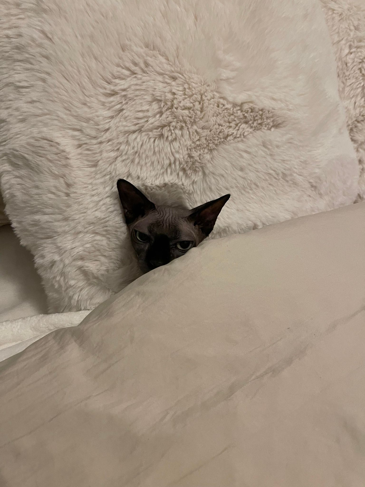

Blu is the first cat I adopted. I got him off of Craigslist. He likes to sit in weird positions and on top of his parents. This makes it difficult for me to get up and do work.
I thougt Blu was getting lonely so I decided to adopt another cat. I picked Perry because she is a little chunky so I thought it was cute. She's also very sweet and loves to be scratched.
I found Udon under a car. I was supposed to only have two cats but I couldn't abandon a kitten on the streets. She is very active and loves to mess around with the dirt in my plants.
Poppy is my newest cat. She's a sphynx. I got her from a coworker who was moving away and wasn't able to take Poppy with her. She's super sweet and cuddly. Because she has no hair, she's able to dig into blankets and tuck herself in (photo for reference).
